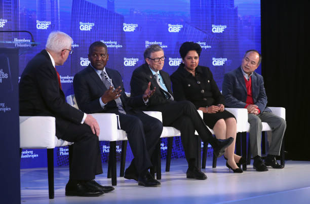
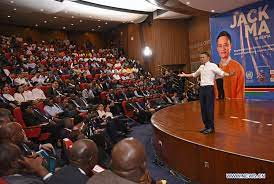
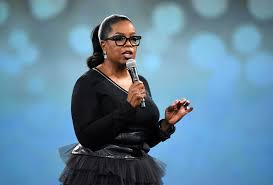

82nd Conference Meeting:Digitalization Meets The Unaware.
Overview
Cloud O' welcomes all the participants and future aspirants to it's 82nd Conference Meeting: "Digitalization Meets The Unaware".
I welcome all the eminent speakers and guests from all over the country from different walks of life you have come here to share their knowledge and vast experience with the multitude of people present.
Speaker and Guest
Guest Speakers
1. Bill Gates
He is an American businessman, investor, philanthropist, and writer
best known for co-founding the software giant Microsoft, along with his childhood friend Paul Allen.
2. Aliko Dangote
He is a Nigerian businessman and industrialist.
He is best known as the founder, chairman, and CEO of the Dangote Group, the largest industrial conglomerate in West Africa.
3. Jack Ma
He is the co-founder of Alibaba Group, a multinational technology conglomerate. Ma is also the co-founder of Yunfeng Capital, a Chinese private equity firm.
4. Mark Zuckerberg
He co-founded the social media service Facebook and its parent company Meta Platforms (formerly Facebook, Inc.),
of which he is executive chairman, chief executive officer and controlling shareholder.
5. Janice Bryant Howroyd
She is an entrepreneur, businesswoman, and author. She is founder and chief executive officer of The ActOne Group,
the largest privately held, minority-woman-owned personnel company
founded in the U.S.
6. Oprah Winfrey
She is an American talk show host, television producer, actress, author, and media proprietor. She is best known for her talk show,
The Oprah Winfrey Show, broadcast from Chicago, which ran in national syndication for 25 years, from 1986 to 2011.
Gallery



Schedule
This is a three-days events(From the 20th of December, 2023 to the 22nd of December, 2023).The 82nd Conference Meeting is going to be held in the CN tower.
Break time is the where you can eat, you can use conveniently use the restrooms, stretch out your legs etc.
Rapid Technological Advancements:
Digitalization refers to the transformation of various aspects of life and business through the integration of digital technology.
Pervasiveness of Digital Tools:
In today's world, digital tools and technologies have become ubiquitous, impacting everything from communication to commerce.
Challenges for the Unaware:
Many individuals and businesses are unprepared for the rapid pace of digitalization, leading to potential challenges and missed opportunities.
Digital Knowledge Gap:
There is a growing knowledge gap between those who are digitally savvy and those who are unaware or inexperienced with digital technologies.
Impact on Businesses:
Traditional businesses may struggle to compete in the digital age if they don't adapt to new digital tools and strategies.
Digital Transformation:
Organizations are increasingly undergoing digital transformation to stay competitive and meet the evolving needs of their customers.
Cybersecurity Concerns:
The unaware may be more susceptible to cybersecurity threats, as they may not be aware of best practices for online safety.
Access to Information:
Digitalization has democratized access to information, but the unaware may still struggle to harness the benefits.
Education and Training:
Education and training are crucial to bridge the digital knowledge gap and empower individuals and businesses to thrive in a digital world.
Opportunities and Risks:
While digitalization presents opportunities for innovation and growth, it also comes with risks, such as privacy concerns and data security issues.
Digital Inclusion:
Ensuring digital inclusion is a societal goal to prevent leaving people behind in the digital transformation process.
Evolving Consumer Behavior:
Consumer preferences and behavior are changing as a result of digitalization, impacting industries like retail, entertainment, and more.
Digital Divide:
The digital divide, which separates those with access to digital resources and those without, is a pressing concern in the context of digitalization.
Government Regulations:
Governments are enacting regulations to address digital issues like data protection, online privacy, and antitrust concerns.
Ethical Considerations:
Digitalization raises ethical questions, such as the responsible use of artificial intelligence and the impact of digital technology on employment.
Continuous Learning:
The digital age requires continuous learning and adaptability, making lifelong education essential for staying aware and relevant.
The Role of Digital Literacy:
Improving digital literacy is a key step in helping the unaware navigate the digital landscape effectively.
Collaboration and Partnerships:
Businesses, governments, and organizations can collaborate to ensure a smoother transition into the digital era.
Future Outlook:
The ongoing convergence of digitalization and the unaware will shape the future of society, the economy, and technology.
Testmonials
Talk on Coronavirus with Mr Bill Gates. In the 80th Conference meeting.
Thank you for giving me the courage to break-out the boredom that exist in this pandemic. ~ Mr Mateus.
I'm grateful for the teaching Sir, it really got to give a try forex trading. Now, I'm making 5000CAD - 10000CAD bi-weekly in revenues.Thank you!!.~ Mrs Blinglinton.
Talk on Youth Empowerment with Mr. Aliko Dangote. In the 81st zonal Conference meeting(Africa).
I got my own clothing brand now Sir, thank you. I really appreciate the teachings from the 81st zonal Conference meeting(Africa). ~ Mr Theodore.
I'm grateful for the teaching Sir, it really got to open shop for myself. Now, I'm making 5000CAD in monthly revenues. I would not miss next meeting for nothing.~ Mrs Nkechi.
Talk on Time Efficency and Utilization with Mr. Jack Ma. In the 81st zonal Conference meeting(Asia).
It was really worth the time. ~ Mrs Wong
I would not miss next meeting for nothing.~ Mr Cho
Talk on Market Efficency and Utilization with Mr. Mark Zuckerberg. In the 81st zonal Conference meeting(United States of America).
Thank you for adding me to your inner circle. ~ Mrs Alessandria
Well executed!!.~ Mr Warren Buffet
Oprah Winfrey. In the 81st zonal Conference meeting(Africa).
Nice speech gyal!!~ Mrs Kim Kardashian
We thank you and your team for sowing a seed in our country.~ Ex-president Nelson Mandela.